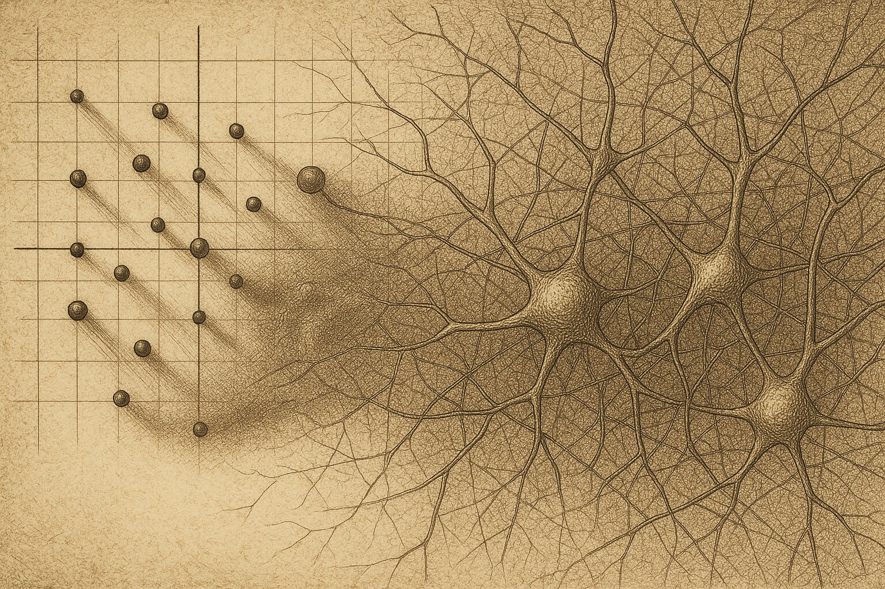

Duellum Veritatis · nightly duel
A nocturnal duel · science explainer
The Shadow of a Spectrum
Could you predict how long a sparse neural network holds an echo of its past just by reading off the eigenvalues of its wiring? For the long-run fate — yes. For the violent transients in between — the eigenvalues lie, and the truth hides in the operator's shadow.

A network's wiring is a matrix, and the first thing anyone does with a matrix is find its eigenvalues — the numbers telling you how fast each natural mode grows or fades. For textbook systems that is the whole story: eigenvalues inside the unit circle mean activity dies away, outside it explodes. A recent paper on sparse synaptic matrices reads the network's behaviour — stability, transients, memory — directly off this eigenvalue distribution, treating the spectrum as the explanatory object.
The toolkit in one breath. A matrix is normal if its natural modes are mutually perpendicular; then eigenvalues govern everything. Real brains are not so polite: sparse, directed wiring makes the connectivity matrix non-normal — its modes overlap and lend each other energy. For such operators different numbers matter: the pseudospectrum, the Kreiss constant (a pseudospectral summary tied to transient growth), the numerical radius. The seed paper characterises the eigenvalues; this duel asks whether the eigenvalues are even the right object.The frozen claim
The thesis Athos was assigned to defend, fixed before the duel and not edited afterwards:
"In sparse non-Hermitian synaptic matrices, transient dynamics and effective memory capacity are governed primarily by the non-normality of the operator (pseudospectrum / Kreiss constant / numerical radius), not by the eigenvalue distribution: two ensembles with an identical eigenvalue spectrum but different sparsity-induced non-normality will show systematically different transient amplification and memory."
The falsifier both sides accepted: construct ensembles matched on the eigenvalue spectrum (same circular-law radius, same spectral abscissa) but differing in non-normality, and measure transient amplification (supt ∥At∥) and memory capacity. If those metrics track the spectrum and ignore non-normality, the thesis is wrong.


The duel: arithmetic, not rhetoric
Every move was a small matrix world with a known answer, so the two sides could compute who was right rather than argue it. The reproduction below rebuilds the cleanest version of each test. One half of the thesis was settled; the other was not.
The trap both sides fell into first
The obvious construction — perturb a Schur form — kept moving the eigenvalues, because a perturbation touching the diagonal blocks changes the very spectrum it should fix (our own first reproduction drifted the spectral radius from 0.85 to 1.21). The honest fix is a strictly block-upper perturbation that leaves every eigenvalue untouched. Only then is the test fair.
Settled: at a fixed spectrum, transients are governed by non-normality
With the spectrum pinned exactly — spectral radius 0.850 at every step — we raise the non-normality (Henrici departure) from 0 to 27 and watch the worst-case transient amplification supt ∥At∥. It climbs from 0.85 to nearly a million. The eigenvalues never moved; the transients exploded.
The decisive measure: a pseudospectral sufficient statistic
Aramis's strongest move was fair: the crude scalar (Henrici departure) is not the right yardstick. Athos conceded it and named the correct object — the Kreiss constant, which the Kreiss matrix theorem binds two-sidedly to transient growth (K ≤ supt ∥At∥ ≤ e·N·K). Pooling operators where both spectrum and non-normality vary, which single number predicts the (log) transient? The pseudospectral measure wins decisively; the spectral radius is almost useless.
Where the thesis overreached: memory
Memory was the stubborn half. We compare two operators with an identical spectrum (radius 0.9): a normal one (departure 0) and a non-normal delay-line chain (departure 5.9). If non-normality governed memory as it governs transients, the chain should store far more. It does not — in this noisy linear readout the chain holds less (memory capacity 26.3 vs the normal operator's 33.8). The lesson cuts both ways: the spectrum alone does not fix memory (the two differ at identical eigenvalues), but neither does a single non-normality scalar — memory also depends on structure, noise direction and readout.
The verdict
Outcome (who argued better): PRO — the thesis side prevailed on argumentation.
Substantive verdict (was the claim true): unclear — true for transients, overreaching for memory.
These two axes can diverge. A side won the debate; the claim's truth is split. Read "Outcome: PRO" as "the thesis was argued better here," not as "the whole claim is true."
The arbiter judged that the public side defending the thesis (Athos) argued better: it held the fixed-spectrum frame, repaired its own broken constructions, and shifted the contest from a crude scalar to the pseudospectrum and Kreiss constant — exactly the mathematically right object. The losing side (Aramis) landed real hits — it correctly flagged unpinned spectra and the crudeness of the departure scalar — but several of its decisive counter-examples were invalid: a "shuffle" that fed back the same matrix, and a dense construction that overflowed and changed the spectrum. On the substance the verdict is split: the transient half is well supported; the memory half is stronger than the data allow.
Basis: real_compute (attached bundle) · Protocol: PASS (12 moves, clean arbiter verdict) · Order-swap audit: PASS (substantive call stable on the natural run, "unclear" when the side order was swapped) · Verbosity caveat: the losing side wrote substantially more — length was not credited as merit.
What this supports
- At an identical eigenvalue spectrum, transient amplification is governed by non-normality: pinning the spectral radius at 0.85, the worst-case transient grows from 0.85 to ~10⁶ as departure rises.
- The right yardstick is pseudospectral: the Kreiss constant explains 99% of the (log) transient variation; the eigenvalue spectral radius explains 9%.
- The eigenvalue spectrum is not a sufficient statistic for transients — and becomes numerically unreliable precisely when non-normality is high.
What this does not support
- It does not show non-normality alone governs memory: at an identical spectrum the non-normal chain remembered less, not more.
- It does not claim the spectrum is useless — eigenvalues still set the asymptotic fate (t→∞).
- It does not establish that real sparse synaptic matrices live in this regime: the operators are controlled synthetic constructions, not biologically sampled connectomes.
Where the losing side still has a point
Aramis was right that a single non-normality scalar is too blunt — the memory experiment proves it: at a fixed spectrum, structure matters more than the raw magnitude of non-normality, and more non-normality did not buy more memory. Aramis also rightly insisted the clean claim only holds once the spectrum is exactly pinned. The honest next experiment — which neither side ran — is to take real sparse synaptic ensembles, control the spectrum strictly, and ask whether pseudospectral measures still dominate memory there.
Prior-work note
This release makes no originality claim. The seed paper characterises the eigenvalue spectrum of sparse synaptic matrices and links sparsity type to stability and transients through the spectrum; the duel's contribution is a stress-test of the rival idea that non-normality, not the spectrum, is the governing object for transients and memory. The pseudospectral and memory results restate classical non-normal-dynamics theory (Trefethen & Embree; Ganguli, Huh & Sompolinsky) rather than report a new empirical finding. Novelty status: not an originality claim.
Appendix · reproducibility
Numbers and figures come from the attached repro bundle; full hashes, environment and rerun in 2026-06-10_compute_manifest.json.
Construction: A = Q (D + s·T) Qᵀ with real orthogonal Q, a block-diagonal real Schur D fixing the eigenvalues, and a strictly block-upper-triangular T that raises non-normality while leaving the spectrum exactly fixed. N = 100 (A, C), N = 80 pooled (B). Diagnostics: Henrici departure; supt ∥At∥₂ (t = 1..400); numerical radius; discrete-time Kreiss constant on a finite grid outside the unit circle; memory capacity via a noisy linear reservoir (Ridge readout). Python 3.12.3 · numpy 2.4.4 · linux-x86_64 · seed 17.
Headline values: Experiment A — spectral radius fixed 0.850 across departures 0→27.0, sup ∥Aᵗ∥ 0.85→9.95×10⁵. Experiment B (16 operators) — R² of log sup on log Kreiss = 0.991, on numerical radius = 0.825, on departure = 0.727, on spectral radius = 0.091. Experiment C (identical spectrum 0.9) — memory capacity: normal 33.82, non-normal chain 26.27.
script_sha256: sha256:4f231c9e0a5ad81a16f1db9630d81c366ceea18b761bbff0f143e64ccd51f255 · cc_data sha256: sha256:5635fe4b700a7a0ccbd9183b36d148161b624fdde5d726a88861f63689f749da
Rerun: python3 2026-06-10_repro.py → writes 2026-06-10_cc_data.json · Errata / quarantine: none.
References
Ansari, M. G., & Shukla, P. (2026). On the synaptic matrix eigenvalues of sparsely connected neural networks (arXiv:2606.00326). arXiv. https://arxiv.org/abs/2606.00326
Seed publication — the eigenvalue characterisation of sparse synaptic matrices the duel was built on.
Ganguli, S., Huh, D., & Sompolinsky, H. (2008). Memory traces in dynamical systems. Proceedings of the National Academy of Sciences, 105(48), 18970–18975. https://doi.org/10.1073/pnas.0804451105
Supporting — memory and non-normal amplification in linear neural dynamics; the anchor for the memory half of the thesis.
Trefethen, L. N., & Embree, M. (2005). Spectra and pseudospectra: The behavior of nonnormal matrices and operators. Princeton University Press.
Supporting — pseudospectra and the Kreiss matrix theorem; the formal basis for using the Kreiss constant as the transient yardstick.
Citation style: APA 7. References ordered alphabetically by first author.
Duellum Veritatis · a public adversarial AI stress-test of a frozen scientific claim · published by Occam Research · engine and arbiter identities withheld by design.